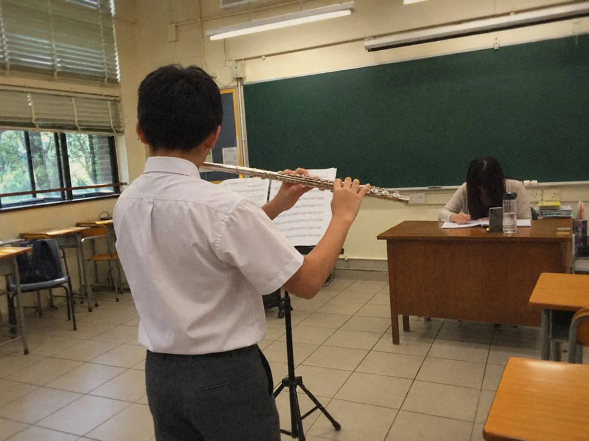
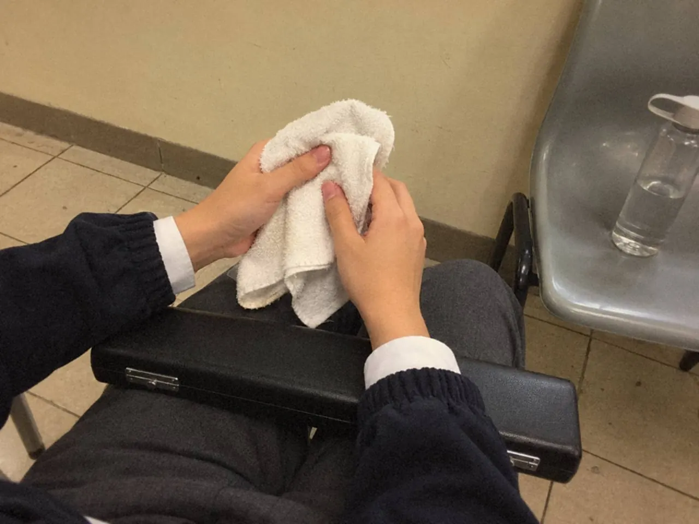
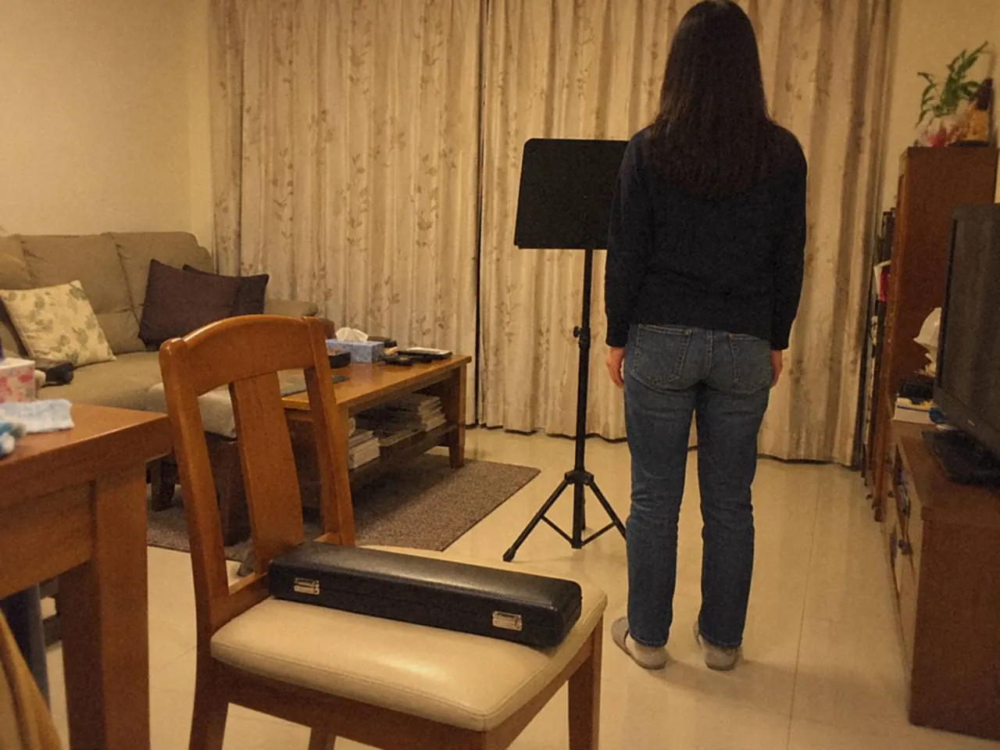

考場壓力要提前練。按所選考試的流程做完整模擬，錄下來分清偶然失誤和反覆問題，再把進場到第一句練成固定動作。緊張未必會消失，但第一分鐘可以有熟悉的路走。

在課室吹得穩，不代表到考場或台上也穩。緊張會令氣變短、手出汗，第一句不集中，聽覺判斷也跟着亂。這時候靠膽量不夠，要靠一套已經重複過的動作。
模擬考要怎樣才算數？
先分清兩件事：一次完成，和停下細修。模擬時只做前者，流程則按所選考試來排。
模擬前準備好物品和流程，錄下全程。開始後按原定安排走，不因一個錯音重新來過。這樣才練得到正式演奏中繼續向前的能力。

錄音可以按項目評一次：先看連貫和準備動作，再看個別問題。結束後記下整體，是否自然開始、保持連貫、完成結尾，然後挑一兩項細節回看。
下一次模擬，應該放在針對問題練過之後。一天重錄很多次而方法不變，完整演奏只會變成疲倦下碰運氣。
模擬之後，先分哪兩類問題？
最容易記得的，是那個明顯的錯音，其他表現反而模糊。回看時分兩類：偶然的小失誤，和在練習與模擬中反覆出現的模式。
先聽完整一次，看連貫，看速度、音色和曲間安排是否穩定。之後才回到具體位置，不要一開始就把演奏剪成無數個錯。
反覆問題要找情境，例如每次換曲後第一句容易急，或高音前總提前吸氣。這些現象可能跨越不同作品，要優先處理。只修那一個音，問題多半換個地方再出現。
偶然失誤，就看有沒有清楚的恢復方式。小錯之後仍保留拍子和樂句，也是要練的能力。
選一兩項最重要的改善，先在日常練習處理，再做下一次完整模擬。每天重做全套，反而沒有時間改變方法。做得穩的部分也要記下，準備才不會一直追着不足走。
模擬考讓正式流程變熟悉，也替接下來的練習指出方向，不用把它當成提前放榜。
第一分鐘為甚麼最重要？
那一分鐘裏，能控制的只有熟悉的動作。可以用固定的進場、調音和第一句呼吸流程，把它拆開來練：
- 站穩
- 看譜
- 感覺速度
- 預備呼吸
先只做流程和首句，再逐步加入完整演奏。也練一次小失誤後繼續，讓注意力有下一拍可以回去。
考前保留熟悉的安排，例如整理物品，提醒要少而具體。別臨時改嘴形，也別加入大量新技巧或新要求。緊張時，注意力放回已練過的小動作，由結果拉回眼前的音樂。

若焦慮長期明顯影響生活，應尋求合適的支持。
上台第一句怎樣穩下來？
第一句可以獨立排練，把它當作一項技術。走到位置，站穩，心裏聽見速度，預備，再出聲。提示要是平日練過的短動作，上台前不要突然增加很多要求。
在家就可以模擬。先把長笛放好，走到譜架前，停穩才拿起樂器，心裏聽見首句，再做熟悉的預備。每次只吹第一句便停，讓「開始」成為可以重複的動作。

課堂上可把一小句旋律、站位、第一句和收結拆開練。上台前再把入場、站位、收音、第一句和結尾逐項檢查，彩排別只走形式。有咪高峰和燈光的場合，尤其要在彩排時試過第一句。
之後加入觀眾或錄影，流程保持不變。遇到小失誤，保留拍子繼續，演奏完才回看，不必每次立即重來。
常見問題
模擬考要做多少次？
沒有定數，要看問題修正了多少。每次之間先針對一兩項弱點練習，不必每天重做全套。
考級前一晚要改演奏方法嗎？
不要。考前提醒宜少而具體，避免臨時改嘴形或加入大量新技巧。
緊張可以完全消除嗎？
不容易，練習的目標也不在此。目標是情緒起伏時，仍找得到那個已練過、知道怎樣開始的位置。
今天試一次：把樂器放好，走到譜架前，只吹第一句就停，重複三次。
流程要跟哪種考試排，可看ABRSM：實用考試、演奏考試與樂理資格，規則以機構現行公布為準；一起安排模擬可看考級準備。